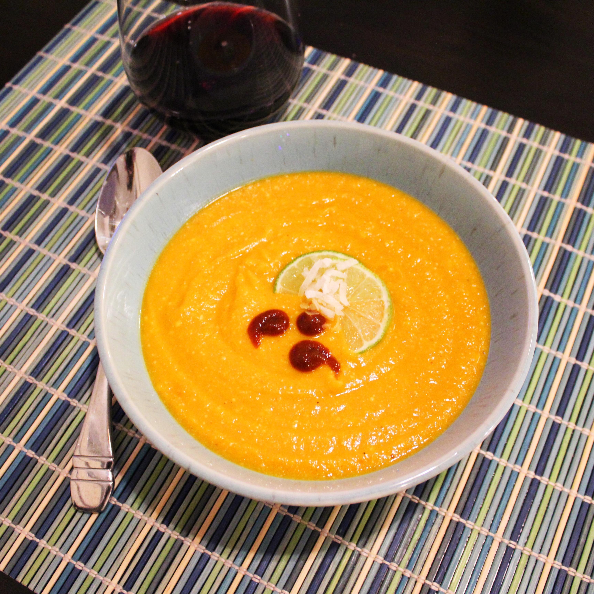

Thai Sweet Potato Soup

Description
Great vegetarian option. Top this Thai sweet potato soup with lime wedges, chopped cilantro, and unsweetened shredded coconut
Ingredients
- 1 tablespoon vegetable oil
- 1 cup diced onion
- 2 tablespoons red curry paste
- 2 tablespoons Sriracha sauce
- 2 teaspoons grated fresh ginger
- 1 teaspoon grated fresh garlic
- 4 cups peeled and diced sweet potatoes
- 2 cups peeled and diced carrots
- kosher salt and freshly ground black pepper to taste
- 3 cups vegetable broth
- 1 cup coconut milk
Steps
- Heat oil in a large pot over medium-high heat. Add onion and saute until soft and translucent, 3 to 4 minutes. Add curry paste, Sriracha sauce, ginger, and garlic; saute until fragrant, 3 to 4 minutes. Stir in sweet potatoes and carrots; season with kosher salt and pepper.
- Add vegetable broth and bring to a boil. Reduce the heat to low and simmer until vegetables are fork tender, 20 to 25 minutes. Turn off the heat and puree with an immersion blender until soup is smooth. Stir in coconut milk and adjust seasoning, if necessary.